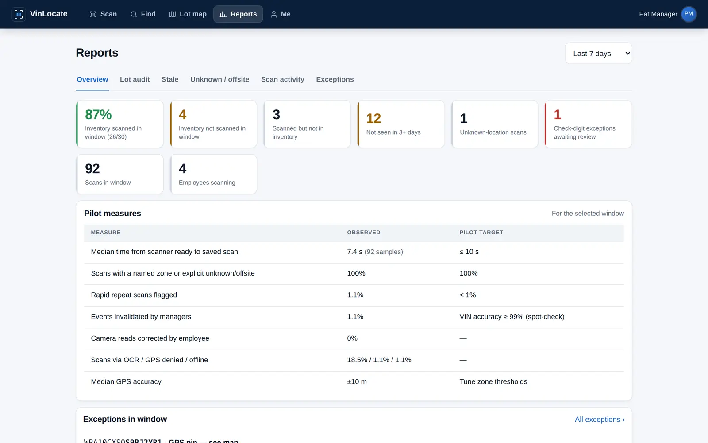

VinLocate
A shared answer to a familiar dealership question: where is that vehicle?
Where was it last seen?
Scan the VIN, confirm the zone, and give the next person a place to start.
Look up the last sighting by stock number or VIN. The timestamp tells you how fresh it is. VinLocate records observations, not a live GPS position.
Last seen. Not live GPS.
Follow one example from a scan to a lookup, and see why the timestamp matters before sending someone across the lot.

The idea
VinLocate brings VIN scanning and vehicle history into a workflow built around dealership teams. Its web and mobile scanner paths support the people on the lot and the people managing the work.
What it is designed to help with
- Vehicle sightings and a useful history
- Role-based search, zones and audit reporting
- A workflow built around real dealership handoffs
Where it stands
Live product. You can visit the product website to explore its current offering.
Visit VinLocate >What keeps making
you say,
“There has to be
a better way”?
Tell me about it. The messy workflow, the idea in your notes, the thing you’ve been meaning to make.
Start a conversationThe button above opens your email app. Nothing is submitted here.